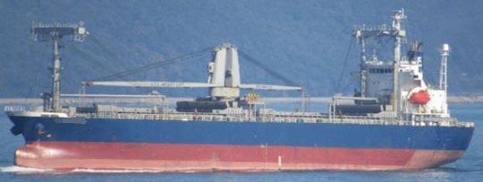

14,454 DWT 9,910 GRT General Cargo Blt 2005 Jp
/ informed by BNC SHIPBROKING CO., LTD.
(18-647)

- TYPE : TWEEN DECKER / GENERAL CARGO SHIP
- BUILT : NOV. 9, 2005, HIGAKI SHIPBUILDING CO LTD., JAPAN
- FLAG/CLASS : PHILIPPINES / NK OCEAN GOING
- LOA/LBP/B/D : 127.66 / 119.50 / 19.60 / 14.50 m
- DWT/draft : 14,454 T / 9.465 m
- GRT/NRT : 9,910 / 4,494 T
- MAIN ENGINE : MAN-B&W 6S35MC DD 5,710 BHP X 170 rpm X 1set
(DEHUMIDIFIER AND HEATING SYSTEM IS EQUIPPED)
- SPEED : TRIAL MAX 15.59 kt, SERVICE 14.3 kt
- GRAIN/BALE : ABT 20,126 / 19,290 m³
- HOLD/HATCH : 2 / 2
- GEAR : D 30.0 X 2set, C 30.5 X 2set (COMBINED UPTO 60 TON)
- CREW COMPLEMENT : 21 P
- OTHER TANK CAPACITY : 4,237, FW 525, FO 828, OTHER 36 m³
- LAST/NEXT SS : OCT. 25, 2015 / NOV. 8, 2020
- LAST/NEXT DD : DEC. 11, 2016 / DEC. 10, 2019
- LOCATION : TRADING IN ASIA RANGE
- DELIVERY : NOVEMBER 2018 (NOW TC UPTO NOV. 2018 WITH +/- 1 MONTH OPTION)
Information History
- 180822 : She is available for sale.